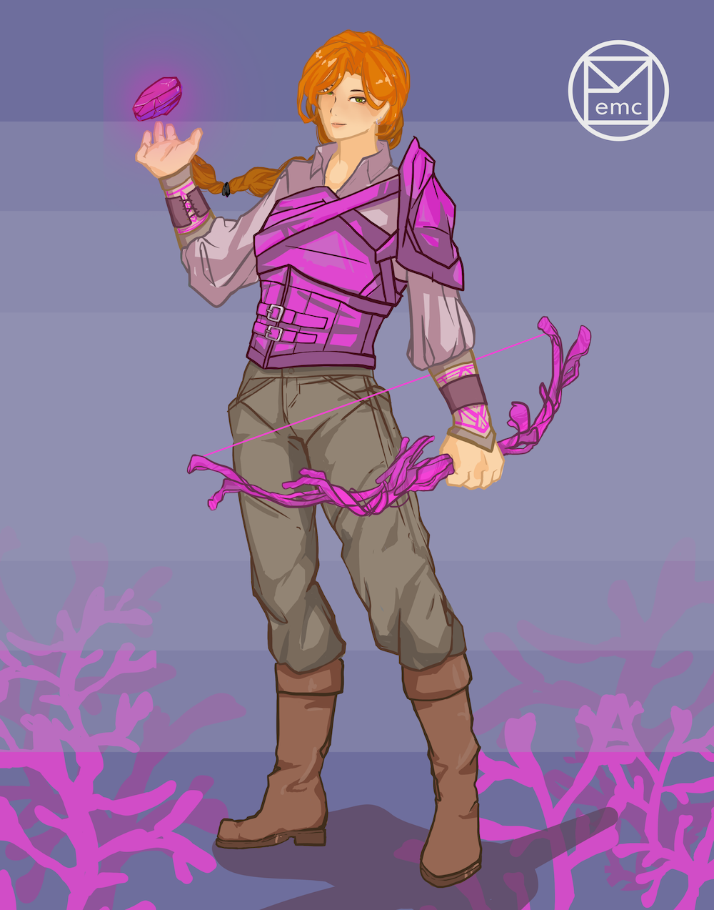

coral huntress
This was the final project for a fashion drawing class. Inspired by a video game, I created a pink coral-themed armored huntress. Design-wise, I aimed to make an outfit that would be comfortable to move in but still protective. Working with brighter colors was somewhat of a challenge for myself, preference-wise.
Like previous works, I primarily used cel shading, which makes conveying the differing textures a bit difficult with lesser experience. However, I still did my best to depict the difference between the softer fabrics of the garments underneath and the harder, more reflective leather-type armor. The accessories were made to match with the armor and overall coral theme, including a coral bow and glowing, stone-like coral trap. The background ties into the aquatic theme, and an earlier iteration of my personal logo is displayed at the top.
Adobe Photoshop; June 2021